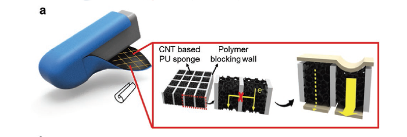
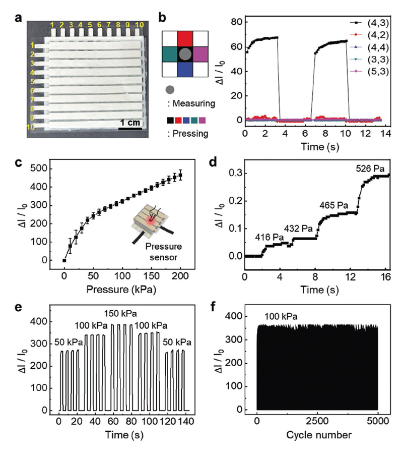
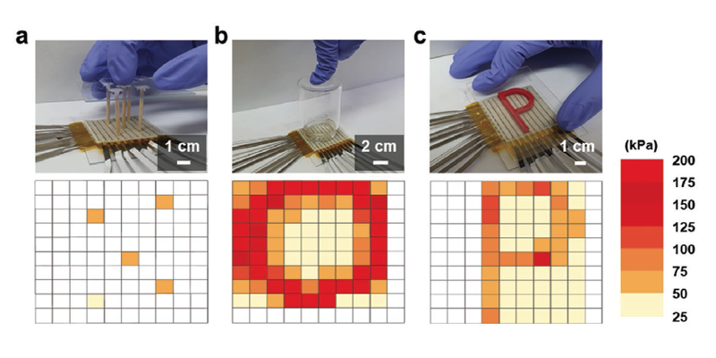
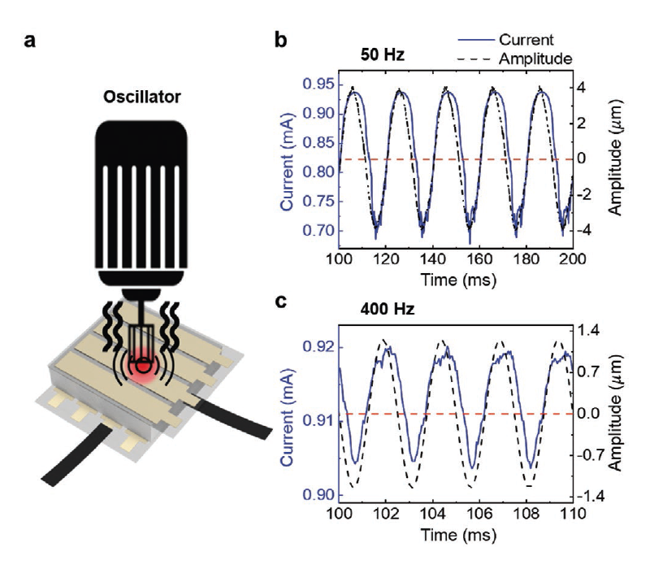
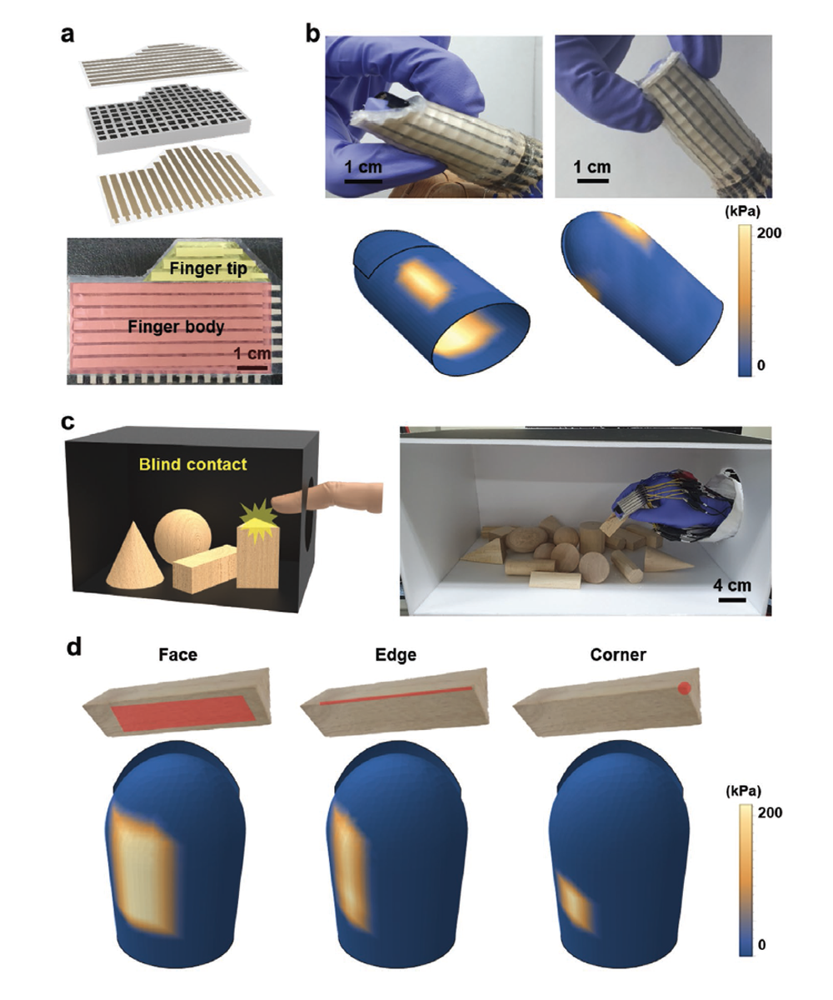

TACTILE SENSOR
Sensor array based on localized piezoresistivity
Omnidirectional Tactile Profiling Using a Deformable Pressure Sensor Array Based on Localized Piezoresistivity
Advanced Materials Technologies, 2100688. 2021
ABSTRACT
With the recent progress of stretchable electronics, artificial tactile sensors pursue to imitate the human tactile system that is deformable and omnidirectional without signal interference. Although deformable tactile sensors without signal interference are demonstrated previously by using stretchable transistors or diodes, achieving omnidirectional tactility is very limited. It is because covering the 3D surfaces of fingers and hands with a sensor requests the structural simplicity and the customized shape design of the sensor. Here, a simple piezoresistive sensor without using the transistors or diodes is developed. The sensor is based on the localized piezoresistivity realized by creating the elastic resistive pixels that are laterally insulating with neighboring pixels. It can be wrapped on a finger and provide the pressure profiles and the spatial deformation of the substrate when multiple mechanical stimuli are applied from arbitrary directions. Based on this omnidirectional tactility, the blind contact recognition of objects that are piled up in a box is demonstrated.
FULL CITATION
Jaehyun Kim, Doowon Park,Sungmin Moon, Chaeyong Park, Kaliannan Thiyagarajan, Seungmoon Choi, Heeseon Hwang, and Unyong Jeong. Omnidirectional Tactile Profiling Using a Deformable Pressure Sensor Array Based on Localized Piezoresistivity. Advanced Materials Technologies, 2100688. 2021
FIGURES

Concept of the localized piezoresistive matrix. a) Scheme of the deformable omnidirectional tactile sensor based on the localized piezoresistive foam. b) Fabrication process to form the polymer insulating wall mesh in the porous polyurethane (PU) sheet and to deposit MWCNTs in each pixel.

Pressure-sensing performance of the sensor. a) Photograph of the localized piezoresistive sensor array. b) Relative current changes of the sensor array. c) Relative current change of a single pixel as a function of pressure. d) Relative current change of one pixel under soft touches (<1 kPa).

Demonstration of the 2D tactile profiles. 2D pressure distribution when pressed by different objects: a) 5 points, b) closed loop, and c) P shape on a glass substrate.

Response of the sensor to the vibrational stimulation. a) Scheme describing the measurement setup using an automated oscillator. b,c) Acceleration profile of the oscillator and the corresponding current response of the sensor at 50 Hz (b) and 400 Hz (c). The time delay between the acceleration and current response was less than 0.5 ms.

Demonstration of the omnidirectional tactility and the blind contact recognition. a) Scheme and photograph of an omnidirectional tactile sensor array that was customized to wrap around a finger except the nail. b) 3D pressure distribution when two points were pressed simultaneously (left: top and bottom at the finger body, right: two sides at the finger tip). c) Scheme of the blind contact recognition and the photograph of the real test. d) The pressure profiles for recognizing a triangular pillar. The sensor touches the face, edge, and corner of the triangular pillar.